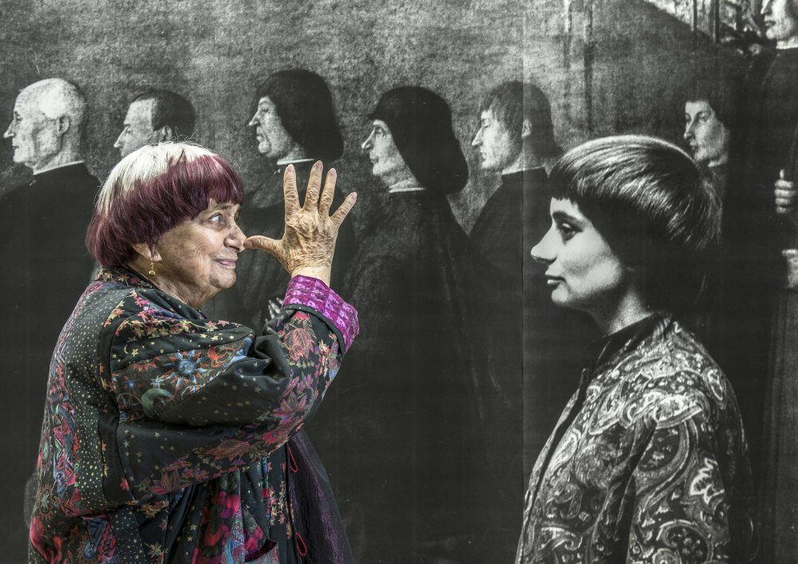

Agnès Varda
The mother of French New Wave.

"I did all that—my photos, my craft, my film, my life—on my terms, my own terms, and not to do it like a man."
Here's a time line of Varda's life:
ENGLISH / CHINESE
- 1928 - Born in Ixelles, Brussels, Belgium.
- 1946 - Legally changed her first name to Agnès at age 18.
- 1950 - Received a bachelor's degree in literature and psychology from the Sorbonne, Paris.
- 1951 - Intended to become a museum curator, and studied art history at the École du Louvre , but decided to study photography at the Vaugirard School of Photography instead. Started career as official photographer of the Théâtre National Populaire.
- 1954 - Her first film, La Pointe Courte was released. The film is a stylistic precursor to the French New Wave.
- 1961 - Made Cléo from 5 to 7, confronting the traditionally objectified woman by giving Cléo her own vision.
- 1971 - Along with 343 women, she signed the Manifesto of the 343 admitting they had had an abortion despite it being illegal in France at the time and asking that abortion be made legal. She also made a film One Sings, the Other Doesn't (L'une chante, l'autre pas) to support this movement.
- 1977 - Founded her own production company, Ciné-Tamaris, in order to have more control over shooting and editing.
- 1983 - A member of the jury at the Venice Film Festival.
- 1985 - Made Vagabond (Sans toit ni loi) through nonlinear techniques, with the film divided into 47 episodes, and each episode about Mona told from a different person's perspective. The film received the Golden Lion of the 42nd Venice International Film Festival.
- 2000 - Firstly used digital cameras to produce The Gleaners and I (Les Glaneurs et la Glaneuse), focuses on Varda's interactions with gleaners (harvesters) who live in the French countryside, and also includes subjects who create art through recycled material, as well as an interview with psychoanalyst Jean Laplanche.
- 2005 - A member of the jury at the Cannes Film Festival.
- 2014 - Received the Leopard of Honour award at the 67th Locarno Film Festival. She was the second female to receive the award after Kira Muratova.
- 2015 - Received an honorary Palme d'Or. She was the first woman to receive an honorary Palme d'Or.
- 2017 - Co-directed Faces Places (Visages villages) with the artist JR, and was nominated for the Academy Award for Best Documentary Feature.
- 2019 - In a film-like interview Varda by Agnès (Varda par Agnès) , she concluded her life-long work on art and documenting contemporary society. Died in the same year from cancer on 29 March in Paris, at the age of 90, and buried at Montparnasse Cemetery on 2 April.
She described her relocation to Paris as a "truly excruciating" one that gave her "a frightful memory of my arrival in this grey, inhumane, sad city." She did not get along with her fellow students and called classes at the Sorbonne "stupid, antiquated, abstract, [and] scandalously unsuited for the lofty needs one had at that age.
"I started earning a living from photography straight away, taking trivial photographs of families and weddings to make money. But I immediately wanted to make what I called 'compositions.'"
Simone de Beauvoir:
"One million women in France have abortions every year. Condemned to secrecy, they do so in dangerous conditions, while under medical supervision, this is one of the simplest procedures.
Society is silencing these millions of women. I declare that I am one of them. I declare that I have had an abortion. Just as we demand free access to contraception, we demand the freedom to have an abortion..."
"One million women in France have abortions every year. Condemned to secrecy, they do so in dangerous conditions, while under medical supervision, this is one of the simplest procedures.
Society is silencing these millions of women. I declare that I am one of them. I declare that I have had an abortion. Just as we demand free access to contraception, we demand the freedom to have an abortion..."
If you have time, you should read more about this incredible woman on her Wikipedia entry.